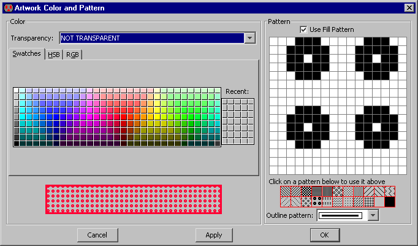

The Artwork technology is an unusual technology that provides general-purpose sketching facilities.
To obtain this technology,
use the popup menu at the top of the component menu and select "artwork".
 |
This technology has nodes for many typical graphic objects such as rectangles,
triangles, circles, and arrowheads.
Polygonal and Spline nodes allow arbitrary shapes to be defined.
Of course, nodes from all other technologies can be used as special electronic symbols when artwork is generated.
Conversely, these artwork nodes can be used to embellish designs done in all other technologies.
Circles can be outlines (normal or thick) or filled.
The default shape is round, but elongation of the node produces an ellipse.
In addition, by using the Object Properties... command (in menu
Edit / Properties),
the outline circles can be reduced to a portion of the circle
(from 1 to 360 degrees).
|
Arrow heads can be drawn in two different styles: simple or filled.
The simple arrow head is the default and consists of two lines.
The filled arrow head looks better because it is made of polygons.
Use the Technology Preferences
(in menu File / Preferences..., "Technology" section, "Technology" tab),
and set the "Arrows filled" checkbox in the "Artwork" area.
The "Export" entry creates an export for use in icons.
After clicking on the entry, you have the choice of selecting "Wire", "Bus", or "Universal" exports
(see Section 3-11-4 for more on icon generation).
There are four different polygon styles: opened, closed, filled, and spline.
The opened polygon can be drawn with solid lines, dotted lines,
dashed lines, or thicker lines.
These nodes require that you use the "Outline Edit" mode
(see Section 6-10-1).
The illustration below shows how outline information,
applied to Artwork nodes, results in different shapes.
In each of the shapes, the outline has the same 5 points, as illustrated in the upper-left.
The nodes interpret this outline information to produce their shape.
Note that the spline curve does not run through the outline points,
only near them.

The final feature of the Artwork technology is its ability to set the appearance of any of its nodes or arcs.
Use the Artwork Color and Pattern... command (in menu Edit / Technology Specific)
to set the color and pattern of any Artwork node or arc.
You can also invoke this dialog by clicking on the "Color and Pattern..."
button in the node or arc "Properties" dialogs.
You can set the color, pattern, and outline texture of any Artwork node and arc.
Predefined patterns are available below the pattern-editing area.
If transparent colors are selected, they are taken from the current color map,
which in turn is taken from the most recently selected technology
(other than the Artwork technology).
